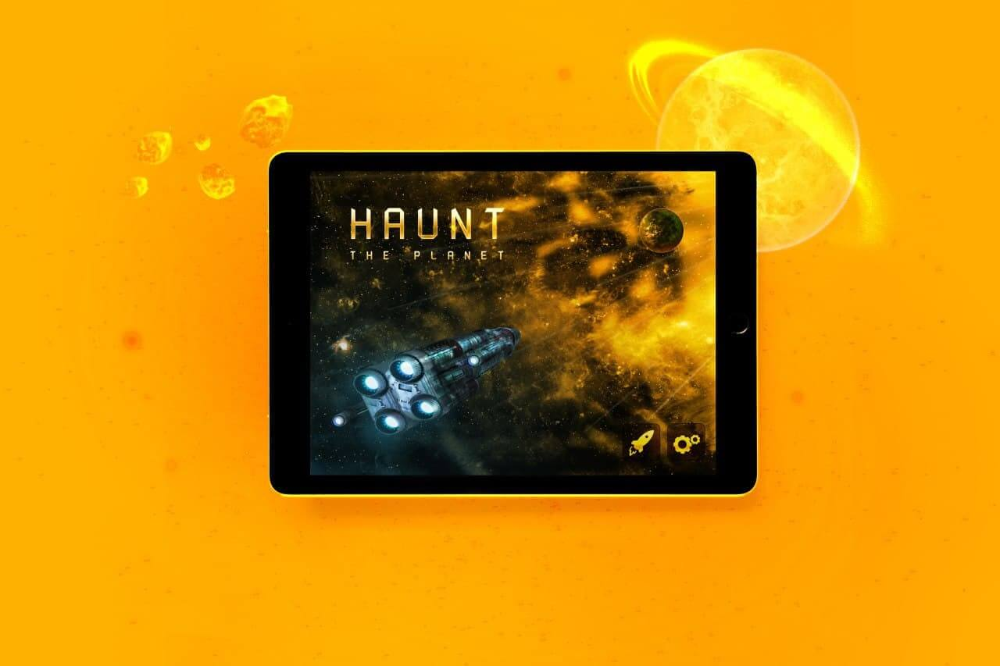
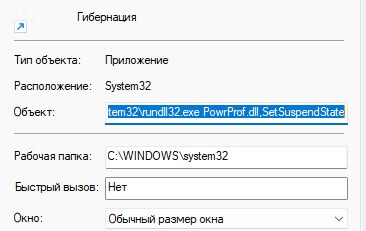
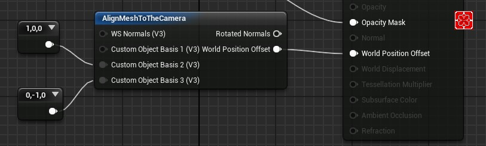
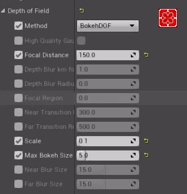

Hello! My name is Denis Chasovoy, and I'm an indie developer.
Currently, my main areas of work are:
Game development on Unreal Engine
Virtual production
Graphic design
In addition to my main projects, I'll be sharing my musical works and notes, as well as insights into working with the Unreal Engine. Working with new clients involves prepayment, contracts, or secure transactions.
I want to share an incredible event that I was lucky to participate in and even act as a co-organizer. It was the world’s first performance where video games were created in collaboration with contemporary artists. The task was to create a game within 48 hours based on a concept devised by an artist. In my case, it was Dasha Rastunina's idea - Schrödinger's Container. In the end, we created a game that evokes emotions. Come to the exhibition of this and other works, opening on December 17th in Kaliningrad at the Rezanium venue!
p.s. Special thanks to the Walrus team, you’re the best! :) Download and play now #ArtGameJam #Rezanium #Kaliningrad #indie #UE #indie
In the Forest
An atmospheric tale about a lost person for Ludume Dare 55. Will you survive, overcome the trials, and make it back home, or will the forest become your eternal refuge? Download #ludumdate55 #gamejam #LD55
Happy Lab
Long-awaited release on Steam. Welcome to the "Happy Lab"! You are undergoing an internship at the most advanced scientific complex. Your daily task is to train the artificial intelligence "Aurora" by conducting tests on a test mannequin. Download #HappyLab #indie #UE
KEG 2023
I'm very glad I had the opportunity to participate in the Kaliningrad Annual Jam (KEG), the theme was "Keeper of Ruins." The player is a lighthouse keeper (based on the lighthouse in Zalivino, KO) inside a toy sphere. Voxel atmosphere, day and night cycle. During the day, everyday tasks, and at night, you need to fend off ghosts, otherwise they'll tear the whole island apart. Turned out to be a decent meditative game. Download #KEG2023 #gamejam #UnrealEngine #indie
Happy Lab
A demo of our game "Happy Lab" has been released. You are undergoing an internship at the forefront scientific institution, the Happiness Laboratory. Your daily task is to train the artificial intelligence "Aurora" by conducting tests on a test dummy. On Steam #happylab #indie #ue5 #UnrealEngine
Ludum 53
Ludum Dare 53, the theme of the jam was "Delivery." We made a game about Prometheus, where you need to deliver fire to people while avoiding attacks from Hephaestus and Zeus. Download #ludumdate53 #gamejam #LD53 #ue5 #UnrealEngine
GGJ 2023
This time, I had the opportunity to participate in the GGJ in Chelyabinsk. The main focus of the game was on graphics and atmosphere, with simple mechanics. We play in a nature simulator where you need to collect genome details on the map. The game has 5 stages with gradual complexity, perfect for beginners. I might release an improved version on itch later. Download #GGJ #eecs_ggj #ggj_chel #ue4 #UnrealEngine #GGJ23
Ludum 52
As part of the Ludum Dare 52 game jam, my son and I created a game. The theme of the jam was "Harvest." You play as a plant that needs to survive the winter on the windowsill. Drink water and stay in the light. Download #ludumdate52 #gamejam #LD52 #ue4 #UnrealEngine
GGJ 2022
Another Global Game Jam has concluded. This time, we created a game about resource mining on the Moon. You must find shelter from the scorching sun while simultaneously extracting resources to move the train. Download #GGJ #ggj_kld #ue4 #UnrealEngine #GGJ22
Ludum Dare 49
Your spaceship has suffered a mishap, and the gravitational stabilizer is malfunctioning. You need to repair it amidst constantly changing gravity conditions. Controls: W-S, space, and left mouse button. Play Online #LD49 #LD49_kld #ue4 #UnrealEngine
Cyberpunker
Mobile game for Android. A police simulator set in the world of cyberpunk. Before you get assignments, you need to serve in the academy. #ue4 #UnrealEngine
GGJ 2021
You play as a homeless dog shivering on the winter streets of an ordinary Russian town. One day, you encounter a sad person who notices you. You both are searching for something, but effort is needed to find it. - Controls: WSAD for movement. E - bark. Space - jump. You can pick up items (flashlight and stick) by touching them. Download#GGJ #ggj_kld #ue4 #UnrealEngine #GGJ21
GGJ 2020
This game is about a person trying to regain their memory. We have 3 levels with different styles and dimensions, representing one person's brain. By playing this game, we restore their memory. Download #GGJ #ue4 #UnrealEngine #GGJ20
Island Battle - GGJ 2019
My home is my fortress! A turn-based two-player game. Core control with W-A-S-D. War broke out between two neighboring islands, the goal is to defend your home. Download #GGJ #ue4 #UnrealEngine #GGJ19
Hamster's Escape - GGJ 2018
This story begins long ago in a distant secret laboratory where no ordinary human foot has ever set foot. Once everything was fine, many happy neighbors enjoyed their hamster life, where wonderful food fell from the sky for dances, and the light shone brighter only from the morning jog in the favorite wheel. But something went wrong and only Lambert remained alive. Supplies gradually started running out, and the face of the man in the white coat hadn't been seen for a long time; something needed to be done. For this purpose, resourceful Lambert came up with a wonderful system; only a hit would shatter the ball, but he needed to ensure energy transmission for fast growth despite having paws. Download #GGJ #ue4 #UnrealEngine #GGJ18
Resonance - GGJ 2017
This game tells the story of a lost soul wandering through floating islands. Our character must find a way out to find peace. But it's not that simple. The mighty crystal - the heart of the small cloud area - is gradually cracking, resonating around locations, creating an unfavorable situation for both the area and our character. Music plays a significant role in the game, accompanying your actions. Correctly passing locations leads to your immediate victory, while mistakes lead to defeat or uncomfortable situations where balance is hard to maintain. The world is crumbling. You have 6 minutes to reach the top. R - restart. E - Use. Download #GGJ #ue4 #UnrealEngine #GGJ17
Haunt: The Planet
Mobile space arcade game, worked on UI, backgrounds, and sprites for it. Download on App Store

Terminal Mania - Game for Qiwi Wallet
Flash game. The plot was built around setting up and taking care of a terminal, with each terminal generating income. Terminals needed to be collected, protected from drunk homeless people; users also got angry and vandalized our terminal if they couldn't pay. As a result, the gameplay turned out to be quite amusing, and the client was satisfied.
There's a little-known way to create a shortcut that will perform shutdown actions instantly (for lazy people like me). Create a shortcut and enter the following in the Target field: C:\Windows\System32\rundll32.exe PowrProf.dll,SetSuspendState, this is for hibernation. For shutting down the system: C:\Windows\System32\rundll32.exe PowrProf.dll, shutdown -s -t 00 You can download it from this link
p.s. If you have a different Windows location, don't forget to modify it accordingly.

Material Facing the Player
There's a misconception that you can't create logic inside a material to make it always face the player. Through trial and error, I managed to achieve the desired effect using World Position Offset. Download (paste inside your material)

Bokeh Effect
Proper settings for bokeh in post-processing.

CSS Style for Basic HTML5 Player
When I was building this website, I needed to play audio. Unfortunately, the default HTML5 player's visual style doesn't suit a dark theme. Surprisingly, I couldn't find anything decent online (without JS) until now. So, after studying the specification, I created my own style. You can download it from this link, just add these values to your style file.